弹幕拼途
一个将实时弹幕战斗、卡牌构筑和 Roguelike 路线选择组合起来的独立游戏原型。 我独立负责系统设计、功能需求与 Unity 开发，并借助 AI 工具加速验证。
完整实机演示
实时弹幕、卡牌拖拽施放、合成与路线推进的完整运行记录。
AI素材制作部分预览
项目制作过程中的 AI 素材制作部分预览，保持原图比例与细节完整呈现。
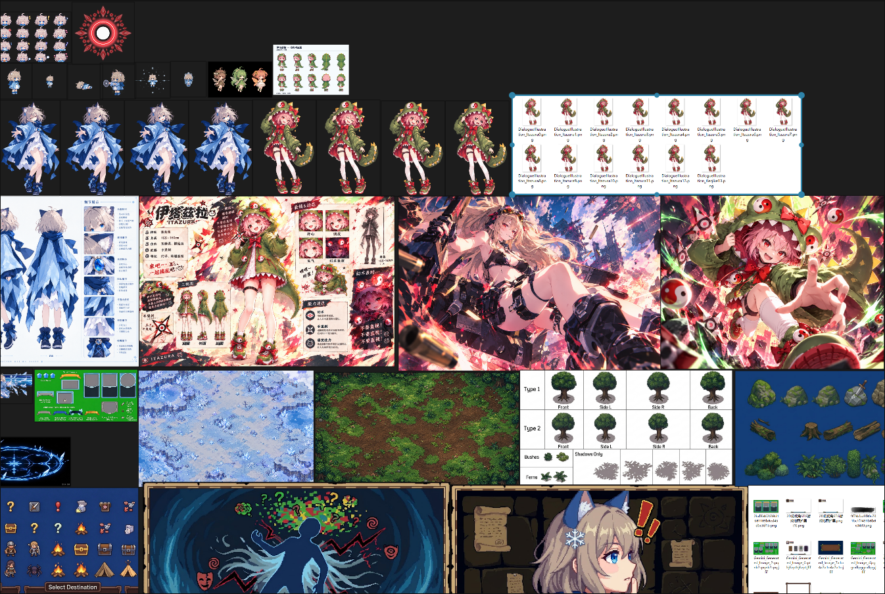
弹幕拼途
游戏策划案
从实时弹幕压力、卡牌施放到资源循环和单局结构，完整记录系统设计、功能边界与 Demo 验证口径。
下载 DOCX 原稿项目结论与阅读说明
《弹幕拼途》是一款单人 2D 俯视角实时弹幕射击与卡牌构筑 Roguelike。玩家在持续运行的敌方弹幕中移动、瞄准并手动攻击，同时通过拖拽卡牌改变火力覆盖、落点与战斗节奏。
项目的核心体验，是在注意力持续被弹幕占用时，仍能判断何时保留、何时花费，以及把有限资源放在哪个位置。设计需要把这种压力转化为可学习、可掌控的主动决策，而不是单纯增加操作负担。
本稿先交代核心体验与全项目设计准则，再依次拆解操作、资源与牌堆、卡牌施放、合成、敌人压力和单局结构，最后收敛到 Demo 范围与验证口径。时间有限时，可优先阅读设计框架、核心玩法循环与 Demo 验证三部分。
设计框架与验证链路
本策划案先明确核心体验与设计依据，再拆解系统机制、关键参数和 Demo 验收口径。实时弹幕让注意力成为稀缺资源：移动、瞄准、观察敌方弹幕、判断资源和拖拽卡牌争夺同一份注意力。卡牌施放不暂停，使玩家必须在危险窗口中决定何时出牌、把牌放在哪里。项目要验证的核心体验，是玩家能否把这种压力转化为可学习、可掌控的主动决策。
核心体验命题
在实时弹幕持续施压时，卡牌施放让玩家在危险中做出有代价的时机、位置与资源选择；玩家逐渐从顾此失彼，成长为能够主动掌控战斗节奏。
“注意力稀缺”是压力来源，“主动决策与掌控”才是玩家真正获得的体验。如果只强调前者，设计容易退化成不断增加操作负担；只有当玩家能看懂风险、形成判断并从失败中调整，注意力压力才会转化为可学习的战斗掌控。
如果出牌只是停下来选择一次强化，卡牌与实时战斗就是两套相邻系统；当出牌时机和位置与走位绑定，两者才共同构成核心玩法。玩家的成长不只表现为数值提高和弹幕变多，也表现为更能在危险中判断何时保留、何时花费、把攻击放在哪里。
全项目设计准则
- 决策优先：挑战应来自何时出牌、放在哪里和何时承担风险，不来自看不清信息、输入冲突或界面摩擦。
- 空间差异：每张卡牌都必须改变距离、覆盖、时点或风险选择，不能只改变伤害数字与特效颜色。
- 风险可读：敌方危险、施放范围和资源状态必须能看懂；失败后，玩家应能判断是走位、时机还是资源判断出了问题。
- 成长不替代判断：构筑、资源和局外成长应奖励主动作战，但不能让数值成长绕过走位与操作判断。
- 范围服务验证：进入 Demo 的系统必须支持一个可测试的体验命题；无法验证或只增加内容量的功能应延后。
系统设计链路
各章统一按“设计问题→体验假设→设计准则→行为目标→机制拆解→关键参数→原型验收→验证指标与迭代方向”展开。机制、数值和配置从玩家行为目标反推；规则与目标冲突时，先调整机制或缩小 Demo 范围，不用文本解释掩盖冲突。每章还要说明具体做什么、关键参数从哪里调、做到什么程度才算完成。
| 层级 | 需要回答的问题 | 本层交付 |
|---|---|---|
| 核心体验命题 | 核心体验是什么，为什么值得验证？ | 实时弹幕持续施压时，卡牌施放让玩家在危险中做出有代价的时机、位置与资源选择，并逐渐掌控战斗节奏。 |
| 全项目设计准则 | 用哪些原则约束全项目的系统设计？ | 决策优先、空间差异、风险可读、成长不替代判断、范围服务验证。 |
| 系统设计问题 | 这个模块要解决核心体验中的哪一个具体问题？ | 每章先写问题，不从系统名称和功能列表开始。 |
| 体验假设 | 玩家会产生什么行为，为什么这值得体验？ | 把“会好玩”改写为可由行为验证的因果关系。 |
| 系统设计准则 | 该模块用哪些原则约束设计取舍？ | 从全项目设计准则推导，明确优先级，以及哪些方案不可接受。 |
| 行为目标 | 希望玩家最终表现出什么可观察行为？ | 目标描述玩家判断与行动，不使用“提升深度”等空泛说法。 |
| 机制拆解 | 玩家做出哪些输入，系统产生什么状态、反馈和可测试产物？ | 每条假设至少拆到操作、系统状态、界面反馈、数据字段与 P0/P1 范围。 |
| 关键参数与调节入口 | 哪些数值和条件会改变体验，哪些已经确认？ | 区分已确认值、P0 初值与待定项，并标明配置入口和异常分支。 |
| 原型验收 | 做到什么条件，原型才算可以拿去验证？ | 功能可跑、边界可测、结果可复核；不能依赖开发者口头解释。 |
| 验证指标与迭代方向 | 哪些指标和现象支持或否定假设？失败时先改什么？ | 记录目标行为、失败信号和调整原则，避免事后解释。 |
各章编写与评审规则
- 每个主要系统先说明它对玩家体验的影响，再给出设计目标、机制、关键参数和验收条件。
- 规则和数值用于验证体验假设，不能单独作为设计成立的证据。
- 验证记录必须覆盖目标行为、误操作、资源循环、选择理由与失败归因，不能只依赖主观感受。
- 任何无法对应核心体验目标、也无法形成可测试行为的外围系统，都不进入当前 Demo 的必要范围。
- 机制拆解必须落到玩家输入、系统状态、界面反馈、数据字段和原型范围；原型验收不能只写“运行正常”，要给出可复现的完成条件。
一、项目概述与设计目标
本章结论：《弹幕拼途》的成立条件，是实时走位、危险时机与卡牌构筑共同产生可解释的选择，而不是把三种类型并列拼接。
1.0 项目设计论证与实现
设计问题：实时弹幕、卡牌构筑和路线选择各自都有吸引力，方案必须说明它们为什么属于同一个游戏，而不是三种流行类型的组合。
体验假设：如果玩家在危险中做出的卡牌与路线选择会直接改变下一场战斗，三个系统就会共同强化“有限注意力下的主动决策”。
设计准则：所有新增系统都必须服务于注意力分配或空间决策；不能用系统数量代替对核心体验的验证。
行为目标：玩家完成一次短战斗后，能指出自己在何时、为何出牌，并能预期奖励如何改变下一次战斗。
机制拆解：将方案收敛为一条可运行的垂直切片：地图选点→房间初始化→战斗→战后结算→构筑→返回地图。每个环节只保留支撑“实时操作与构筑决策互相影响”的必需功能，并统一使用同一套角色状态、卡组和资源数据。
关键参数：P0 范围锁定为一条短路线、一场基础战斗、一次战后奖励与返回地图；P1 再接入多房间、合成和完整牌池。P0 期间不接遗物、局外成长与多流派，避免外围系统改变首轮注意力验证。
原型验收标准：玩家能从选路连续进入战斗、完成施放与结算，并在领取奖励后回到地图；任一环节不需要手动跳场景、补资源或补状态。若必须依赖开发者口头解释才能看出系统关系，原型尚未达到验收条件。
验证指标与迭代方向：若玩家只记住弹幕或美术，却说不清卡牌与走位的关系，应缩减外围系统，先强化战斗中的注意力决策。
1.1 游戏基本信息
| 项目 | 当前设定 |
|---|---|
| 游戏名称 | 《弹幕拼途》 |
| 游戏类型 | 单人 2D 俯视角实时弹幕射击 + 卡牌构筑 + Roguelike |
| 核心操作 | 角色移动、缓速移动、手动基础弹幕攻击、拖拽卡牌施放、使用消耗品 |
| 核心结构 | 分支路线探索、房间战斗/事件、战后奖励、卡牌构筑、最终 Boss 挑战 |
| 当前 Demo 流派 | 冰晶流；冰域流暂不纳入当前 Demo |
| 单局目标 | 沿路线推进并完成最终 Boss 挑战；玩家生命归零则本次冒险结束 |
1.2 游戏概念
玩家在 2D 俯视角战场中操控角色可奇，在持续运行的弹幕环境中移动、躲避敌方攻击，并使用角色自身的基础弹幕进行手动攻击。玩家还可以在战斗过程中拖拽卡牌，在不暂停战斗的情况下释放攻击或其他效果。
冒险采用分支路线推进。玩家在普通战斗、问号事件、商店、宝箱、火堆和 Boss 等节点之间作出选择，通过战斗与事件获取资源、卡牌和成长机会，逐渐形成自己的卡组构筑。
1.3 核心设计目标
| 目标 | 实现路径 | 验证重点 |
|---|---|---|
| 保持实时参与感 | 打牌不暂停战斗；拖拽期间仍可移动角色。 | 玩家能否边走位边施放，误操作是否可控。 |
| 让构筑产生可见变化 | 通过新卡、合成、不同施放类型与弹幕机制改变战斗。 | 不同卡组是否改变攻击覆盖与战术选择。 |
| 形成单局成长曲线 | 燃力、Card Power、卡牌稀有度和合成共同影响战斗节奏。 | 成长是否可感知，资源是否出现无限循环。 |
| 让路线选择有意义 | 不同节点提供不同风险、恢复和构筑收益。 | 玩家是否能理解路线选择的收益与代价。 |
| 维持战场可读性 | 清楚表达敌方弹幕、卡牌状态、资源状态和攻击区域。 | 玩家受击或施放失败时，是否能理解原因。 |
1.4 设计边界
- 不以系统数量代替核心体验验证；无法形成可测试行为的功能不进入当前 Demo。
- 不以暂停战斗换取操作简化；卡牌施放必须保留实时走位、时机和位置压力。
- 不以数值成长绕过走位、瞄准和资源判断；构筑只改变可选手段与风险。
- 不采用横版、3D 或透视式攻击逻辑；弹幕与特效服从 2D 俯视角的可读性。
- 不把待确认的数值和规则写成定案；界面与文档应区分已实现、占位和待定内容。
二、核心玩法循环
本章结论：奖励必须把本次战斗暴露出的卡组问题，转化为下一次战斗可执行的调整。
2.0 核心循环设计论证与实现
设计问题：如何让选路、战斗、奖励和构筑组成连续判断，而不是每结束一场战斗就进入互不相关的菜单。
体验假设：如果每次选路都能预期风险，每次奖励都能改变下一战的应对方式，玩家会主动规划一局内的成长曲线。
设计准则：路线收益可比较；战斗结果能转化为构筑选择；奖励不能绕过核心战斗。
行为目标：玩家会根据当前生命、资源和卡组短板选择节点，并把战后奖励用于解决下一场战斗的问题。
机制拆解：把单局流程拆成可检查的状态与数据接口：节点进入条件、房间初始化、战斗开始与结束、奖励生成与领取、卡组更新、返回地图。奖励结算直接写入卡组、生命和 Fuel 等跨房间状态，Card Power 按战斗初始化；每个奖励增加一次性领取标记。
关键参数：当前固定值包括房间开局抽 5 张、每 8 秒补牌、普通手牌软上限 5 张和单次奖励只结算一次。房间过渡时长、奖励确认步骤与路线最短节点数作为可调项；卡组总数、跨房间生命和 Fuel 必须由同一份单局存档读写。
原型验收标准：同一条路线能连续完成战斗、结算、构筑和下一次节点进入；返回地图后房间状态正确关闭，重复打开不会重复发奖。每个阶段至少能在日志或界面中核对输入、状态变化和产出。
验证指标与迭代方向：记录选路理由、奖励选择理由以及奖励后是否改变打法；若路线只剩收益高低或奖励与打法无关，应调整节点和奖励。
2.1 单局整体循环
- 选择地图上可到达的后续节点。
- 进入房间，按照房间类型执行战斗、事件或交互。
- 战斗中移动、手动基础攻击、躲避弹幕并拖拽施放卡牌。
- 通过擦弹、普通攻击命中、击杀等行为获取 Card Power；燃力按跨房间成长规则保留。
- 完成房间后获得对应奖励，可能包含金币、卡牌奖励、合成机会、遗物或状态恢复。
- 调整卡组与资源状态，继续选择路线。
- 推进至最终 Boss 房并完成本次冒险。
2.2 单场战斗循环
| 阶段 | 规则 |
|---|---|
| 进入战斗房间 | 使用当前卡组重新随机抽牌顺序，抽取 5 张作为初始手牌；Card Power 按战斗初始规则设置。 |
| 实时战斗 | 玩家移动、缓速移动、普通攻击、拖拽施放卡牌及使用消耗品。战斗不暂停。 |
| 资源获取 | 擦弹、普通攻击命中、击杀敌人等来源产生 Card Power；燃力按既定规则积累或衰减。 |
| 战斗结束 | 清除/结算当前房间战斗状态，发放对应金币与奖励。 |
| 房间切换 | 进入下一房间时重新随机抽牌顺序，卡组内容本身不因进入新房间而重置。 |
2.3 构筑成长循环
卡牌成长主要通过获取新卡牌和合成卡牌实现。普通战斗的战后构筑奖励沿用“新卡奖励与合成机会二选一”的方向；新卡奖励为三选一。火堆与问号事件中的挑战强敌场景明确提供一次合成机会。
跨流派卡牌通常不会进入常规奖励；特殊问号事件可以作为突破当前流派卡池限制的例外途径。当前 Demo 只有冰晶流，不需要实现完整的多流派选择系统。
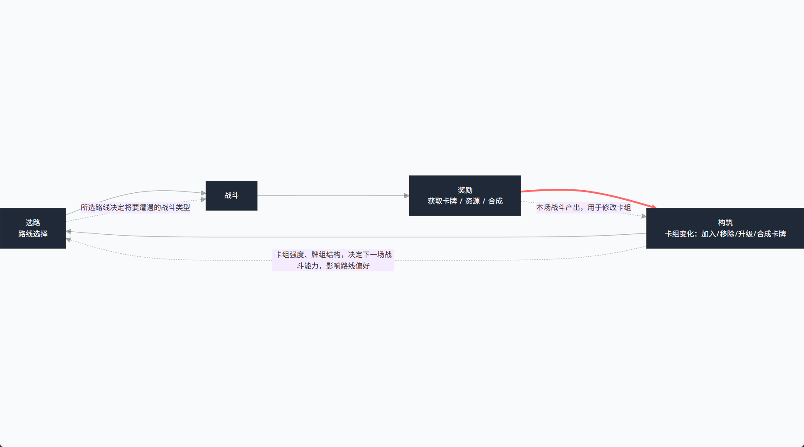
三、操作与实时战斗
本章结论：操作系统的目标，是让风险来自战场判断，而不是鼠标冲突或界面摩擦。
3.0 操作与战斗设计论证与实现
设计问题：如何在保留实时紧张感的同时，让玩家完成移动、瞄准和卡牌施放，而不是被操作本身压垮。
体验假设：如果玩家必须等待危险间隙并选择施放位置，那么出牌时机与落点就会成为走位判断的一部分，而不只是资源消耗。
设计准则：施放风险应来自空间判断，不来自输入不便；危险、手牌和施放范围必须同时可读；受击原因必须能归因。
行为目标：玩家会主动移动寻找施放窗口，并能在走位中完成卡牌施放，而不是停下来处理界面。
机制拆解：先实现操作状态机，区分待机、瞄准、普通攻击、拖牌预览、合法施放和非法退回。按下位置决定左键优先级；拖牌期间显示范围、合法性、无效原因和费用，施放或取消后恢复普通攻击。移动、瞄准与受击状态必须能在同一帧共存，不能用暂停战斗规避输入冲突。
关键参数：当前固定鼠标左键输入优先级、拖回手牌区或右键取消、受击不打断施放。拖牌期间是否保留普通攻击、取消区域大小和无效提示停留时间列为首轮调参项，由误放率与火力中断时长决定。
原型验收标准：玩家能在持续移动中完成普通攻击、拖牌、取消和施放，不出现输入死锁或同一次点击触发两种行为。非法施放必须给出可识别原因；输入日志能复现误放与受击时的操作顺序。
验证指标与迭代方向：重点观察拖拽与普通攻击是否争夺鼠标、施放是否遮挡弹幕、误放率和受击归因。若主要问题是输入冲突，应先改操作映射，而不是降低全部难度。
3.1 操作构成
| 操作 | 规则 |
|---|---|
| 角色移动 | 玩家持续操控角色在俯视角战场中移动；各方向移动速度保持一致。 |
| 缓速移动 | 按住 Shift 进入缓速移动，用于精细调整位置与擦弹。 |
| 基础攻击 | 玩家手动进行普通弹幕攻击，作为卡牌以外的持续输出方式。 |
| 拖拽打牌 | 从手牌区拖出卡牌，施放提示跟随鼠标；松开后根据合法性决定施放或退回。 |
| 使用消耗品 | 战斗中使用，战斗不会因此暂停。 |
输入优先级（当前推荐，待原型验证）：按下位置落在手牌区时，左键优先进入拖牌，不在同一帧触发普通攻击；拖出后锁定施放状态，松开完成施放、取消或右键退出后再恢复普通攻击。采用该映射时，拖牌期间无法维持普通攻击是一项明确的机会成本，而不是输入故障。P0 验证误触率与火力中断是否可接受；若不可接受，再测试右键拖牌或其他修饰键方案。
3.2 闪避与受击
当前不设置独立闪避、翻滚或冲刺动作。玩家通过持续移动、缓速移动和位置管理躲避敌方弹幕。
玩家生命归零后，本次冒险结束。受击会损失生命与部分燃力；具体受伤数值、无敌时间、异常状态等以当前项目已实现和后续确认内容为准。
3.3 拖拽施放流程
- 从手牌区拖出卡牌时，卡牌进入半透明预览状态，鼠标位置显示施放位置提示。
- 施放提示跟随鼠标，系统持续判断当前施放位置是否合法。
- 拖拽期间战斗不暂停，玩家仍可移动。
- 松开鼠标：合法则立即施放并扣除费用；不合法则提示无效并退回手牌。
- 将卡牌拖回手牌区或按鼠标右键取消，卡牌返回原位且不扣费。
- 受击不会打断卡牌施放；卡牌没有通用冷却时间。
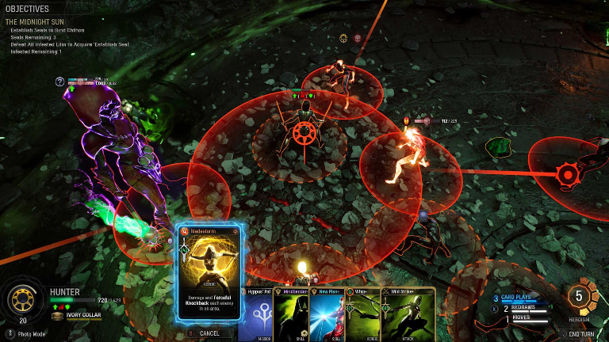
3.4 手牌动画与视觉反馈
- 手牌始终整理成弧形排列；增加、减少或手牌数量变化时，播放重新整理手牌的动画。
- 进入新战斗房间时，初始五张卡牌从抽牌堆所在的右下角依次飞出，向手牌区域中间汇聚后展开。
- 战斗中逐张补牌时，新卡从右下角抽牌堆按钮飞向当前手牌最右侧，再由整理动画重新排布。
- 拖出手牌后，卡牌在鼠标处回正并显示半透明预览。
- 合法打出后，卡牌缩小、半透明，并沿随机弧形轨迹飞向左下角弃牌堆，随后隐藏。
- 右键取消时，卡牌返回拖拽前的位置。
UI 的布局位置、尺寸和比例以预制 UI 物体的方式配置，不采用程序化计算布局位置与比例大小的方式生成界面。
四、资源、牌堆与手牌
本章结论：资源决定什么时候能打，牌堆决定手里有什么；两者共同把出牌从选项卡变成节奏决策。
4.1 资源系统设计论证与实现
设计问题：如何让普通攻击与卡牌拥有两种不同资源，同时避免两个能量条只是重复计数。
体验假设：如果 Fuel 奖励持续命中与主动接敌，Card Power 控制关键卡牌的施放频率，玩家就会在维持普通输出和准备卡牌爆发之间切换。
设计准则：两种资源必须改变不同行为；获取与花费都要可感知；高风险行为可以提供收益，但不能形成无限资源循环。
行为目标：玩家会主动维持 Fuel，并在需要关键卡牌时判断是否通过命中、击杀或擦弹补齐 Card Power。
机制拆解：Fuel 侧实现命中积累、连续未命中衰减、受击损失、阶段阈值和跨房间保留；Card Power 侧实现战斗初始化 300、上限 500、每 100 点折算 1 费、擦弹与击杀粒子、普通攻击即时加 0.5。HUD、粒子和战斗逻辑读取同一资源状态，并提供开发用数值显示以核对来源。
关键参数：已确认参数包括 Fuel 的 0%、30%、70%、100% 阶段，8 秒未命中后每秒 -8，Card Power 初始 300、上限 500、100 点折算 1 费，以及擦弹 +3、击杀 +15、普通命中 +0.5。受击损失、卡牌命中产能、粒子自动吸附延迟和衰减恢复条件仍需实测，不应写成定案。
原型验收标准：两张资源表列出的来源、数值、上限和衰减规则都能在战斗中逐项复现；粒子吸收、普通命中直加和费用扣除不会重复结算。高频、多段、领域和持续攻击下资源不越界，能够定位每一次资源的来源与去向。
验证指标与迭代方向：记录资源短缺时段、两种资源的来源与消耗、玩家是否长期忽略其中一种资源，以及高频攻击是否出现无限施放。若 Card Power 不构成实际选择，应调整费用、抽牌或获取节奏。
4.2 资源定位
| 资源 | 主要用途 | 跨战斗规则 |
|---|---|---|
| 燃力（Fuel） | 强化角色普通基础弹幕攻击，并影响攻击阶段表现。 | 跨战斗保留；非战斗阶段不自然衰减。 |
| Card Power | 支付卡牌施放费用。 | 每场战斗重新初始化。 |
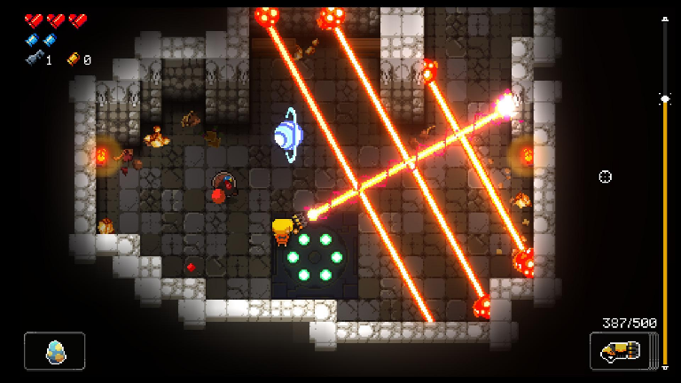
（同类游戏参考：Enter the Gungeon）
研究俯视角弹幕游戏如何在不遮挡战场的情况下放置生命、弹药和其他战斗信息
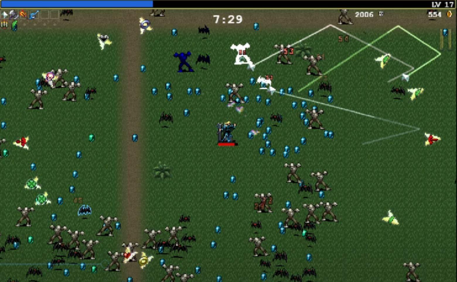
重点看不同资源如何在同一界面中保持辨识度。
4.3 Fuel 阶段与变化
燃力分为三个常规升级阶段，以及一个额外的满槽第四阶段。满槽第四阶段只在燃力保持满格时生效，一旦低于满格便立即退出。燃力受击会损失部分数值；战斗中的命中、衰减与阶段切换共同影响玩家输出。
当前普通弹幕具有四档表现，对应燃力的 0%、30%、70%、100% 阶段。燃力达到相应阶段后，普通弹幕形态和附加攻击会逐步增强。
4.4 Fuel 获取与衰减
| 来源/情况 | 规则 |
|---|---|
| 普通弹幕命中 | 普通弹幕命中敌人获得 Fuel。 |
| 未命中衰减 | 连续一段时间没有命中后开始衰减；当前实现设定为 8 秒未命中后每秒减少 8 Fuel，命中后重置计时。 |
| 战斗范围 | Fuel 衰减仅在 Boss/小怪战斗中启用；小怪房间仅在场上仍有敌人时衰减。 |
| 战斗结束 | 小怪清空后立即停止衰减；非战斗房间不衰减。 |
| 受击 | 受到敌方攻击时损失生命与 Fuel。 |
| 擦弹 | 擦弹属于 Card Power 获取来源，不产生 Fuel。 |
燃力初始值、上限与特殊开局赐福的具体表现需以已确认的实际配置为准；早期讨论中“燃力条提升到直接30”的含义仍存在歧义，不在本版解释为确定数值规则。
4.5 普通基础弹幕阶段
普通左键攻击随 Fuel 阶段切换。较高阶段会增加弹幕表现；当前已有方向包括在高阶段为基础弹幕增加追踪雪花弹幕。具体各档弹幕数量、伤害与攻击间隔属于可调整平衡参数。
4.6 Card Power 数值与费用
| 项目 | 当前确认规则 |
|---|---|
| 初始值 | 每场战斗开始时为 300 Card Power。 |
| 最大值 | 500 Card Power。 |
| 费用换算 | 100 Card Power = 1 费。 |
| 费用形式 | 卡牌费用为整数。 |
| 零费卡 | 允许存在。 |
| UI 显示 | 显示当前值/最大值，不显示小数；能量条按每 100 点一段填充，最大五段。 |
4.7 Card Power 获取来源
| 来源 | 获得量/规则 |
|---|---|
| 擦弹 | 按住 Shift 缓速移动并靠近敌方弹幕，获得 +3 Card Power。 |
| 击杀敌人 | 击杀敌人获得 +15 Card Power。 |
| 普通左键弹幕命中 | 每次有效命中获得 +0.5 Card Power。 |
| 卡牌弹幕命中 | 可以作为额外来源，具体产出数值尚未确定。 |
由擦弹和击杀提供的 Card Power 以能量粒子为载体，玩家吸收粒子后对应数值才入账。擦弹时可在敌方弹幕附近生成粒子；击杀时在敌人周围掉落粒子。粒子会被玩家吸引，若玩家未靠近则在短暂延迟后自动飞向玩家。普通左键弹幕命中属于即时直加：每次有效命中增加 0.5 Card Power，不生成能量球，也不需要二次拾取。
卡牌弹幕命中能量收益尚未定值。后续设计需特别检查高频、多段、领域与持续攻击的收益，避免因高命中次数形成无限资源循环。
4.8 牌堆与手牌设计论证与实现
设计问题：如何在实时战斗里控制卡牌供给，让玩家形成节奏，而不是一直盯牌堆或陷入无牌可打。
体验假设：如果抽牌顺序、补牌时间和资源共同决定可用手段，玩家会围绕下一张牌规划走位和花费；牌堆状态又能帮助其理解循环。
设计准则：牌堆状态可预测；卡牌数量关系可核对；等待补牌不能成为主要玩法；任何消耗或洗回都不能破坏卡牌数量。
行为目标：玩家能理解手牌为何不足、下一次补牌何时到来，并主动保留资源配合关键牌。
机制拆解：牌堆采用统一状态源记录抽牌堆、手牌和弃牌堆；实现开局抽五、8 秒补牌、五张软上限、特殊超额抽牌、打出入弃牌堆、抽牌堆耗尽后洗回弃牌堆。界面数量只读取该状态源，不平独立维护计数。每次抽牌、打出、洗回和移除都记录事件。
关键参数：已确认参数为初始 15 张、开局抽 5 张、每 8 秒补 1 张和 5 张软上限。无牌可洗、消耗牌在本轮循环后的去向、特殊抽牌与补牌计时器的先后顺序属于异常分支，必须在配置和日志中写明。
原型验收标准：经过抽牌、超额手牌、消耗、弃牌和洗回后，卡组总数始终等于三个区域数量之和；界面数量与事件日志一致。所有边界流程可重复运行，不出现丢牌、复制牌或负数计数。
验证指标与迭代方向：观察空手时间、无法支付费用时间和查看牌堆频率；若玩家频繁无事可做，应调整抽牌或资源节奏，不能用动画掩盖等待。
4.9 牌堆组成与查看
卡组由抽牌堆、手牌和弃牌堆共同构成。卡组总数恒等于抽牌堆数量 + 当前手牌数量 + 弃牌堆数量。
| 区域 | 用途与规则 |
|---|---|
| 抽牌堆 | 存放尚未抽取的卡牌。 |
| 手牌 | 当前可拖拽施放的卡牌。 |
| 弃牌堆 | 普通卡牌打出后进入的区域。 |
| 卡组总览 | 显示当前卡组所有卡牌的总览。 |
界面提供抽牌堆、弃牌堆和卡组总览三个查看入口。点击后在半透明黑色背景上展示对应卡牌内容及数量。
4.10 初始卡组与持续构筑
游戏开始时，玩家获得固定初始卡组，共 15 张：12 张低稀有度卡牌、3 张中稀有度卡牌。初始卡组在游戏开始时加入，后续进入新的关卡或房间时不会重新发放这 15 张卡牌。后续游玩通过战后奖励、合成和特殊事件进行卡牌构筑。
卡牌稀有度分为四阶：低稀有度（Low）、中稀有度（Middle）、高稀有度（High）、传说稀有度（Legendary）。
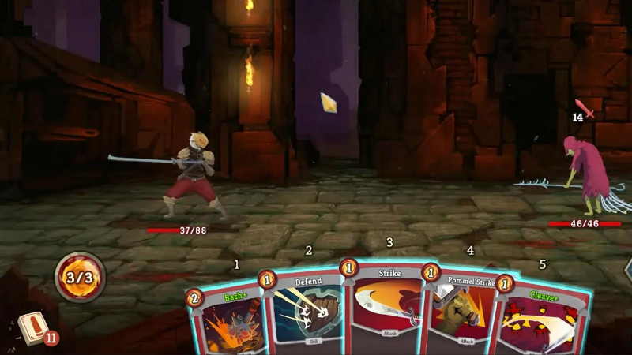
4.11 新房间抽牌与补牌
| 规则项 | 当前确认内容 |
|---|---|
| 新战斗房间 | 从当前卡组中随机打乱抽牌顺序，抽取 5 张放入手牌。只重置抽牌顺序，不重新获取初始卡组。 |
| 正常补牌间隔 | 每 8 秒自动抽取 1 张。 |
| 正常手牌上限 | 5 张，为正常补牌软上限。 |
| 补牌触发 | 手牌少于 5 张时开始 8 秒倒计时；达到 5 张后停止正常定时补牌。 |
| 特殊抽牌 | 特殊效果可以额外抽牌，并可能暂时超过 5 张软上限。 |
| 超额手牌 | 超过软上限的卡牌保留，直到玩家主动打出。 |
| 抽牌堆耗尽 | 当需要抽牌而抽牌堆为空时，将弃牌堆全部洗混并返回抽牌堆，再继续抽牌。 |
| 打出卡牌 | 普通卡牌打出后进入弃牌堆；部分卡牌使用后消失。 |
进入新房间时，重新随机抽牌顺序；卡组卡牌的实际组成保持不变。
4.12 卡牌施放与使用次数
- 卡牌没有统一冷却时间，主要受到 Card Power 费用、抽牌节奏、卡牌去向和卡牌自身效果条件限制。
- 普通卡牌打出后进入弃牌堆；具有消耗属性的卡牌使用后可以从本次牌堆循环中移除。
- 零费用卡牌允许存在，但需要关注抽牌、返能、击杀触发等效果是否形成无限循环。
4.13 当前卡牌设计范围
当前 Demo 先实现攻击卡牌。能力卡与技能卡暂时保留为未来扩展方向，不纳入当前 18 张冰晶流攻击牌的实现范围。
五、卡牌施放与冰晶流牌池
本章结论：不同牌不是不同伤害数字，而是方向、落点和目标控制上的不同解法。
5.0 卡牌施放设计论证与实现
设计问题：如何让十八张攻击牌产生不同战术判断，而不是变成十八种外观不同的伤害来源。
体验假设：如果角色发射、指定位置和自动追踪分别对应方向预判、危险区域控制和目标选择，卡牌组合就能形成覆盖与风险差异。
设计准则：每张牌要有清楚的战术用途、代价和克制场景；高稀有度不能只代表更高伤害；卡牌特效不能遮住敌方危险。
行为目标：玩家会根据敌人位置、移动压力和资源剩余选择施放类型，并能说明某张牌适合解决什么问题。
机制拆解：将 18 张攻击牌做成配置数据，统一字段包含卡牌 ID、稀有度、费用、施放类型、目标规则、弹幕模板和命中限制。P0 先各做一张角色发射型、指定位置生成型和自动追踪型代表牌，验证三套底层行为；P1 再用同一套配置扩展到完整牌池，不按卡牌逐一复制攻击逻辑。
关键参数：牌池规模当前为 18 张，施放类型为 3 类；P0 每类只做 1 张代表牌，P1 再扩到 18 张。伤害、速度、范围、持续时间、生成间隔与命中次数均为卡牌配置参数，首轮先固定单卡基准值，不做全牌同步调参。
原型验收标准：P0 的三种代表牌都能在实战中完整施放、命中、失效和回收；P1 的 18 张牌均能由配置正确读取。追踪目标死亡、持续领域重复命中、分裂与连锁递归等边界都有确定的处理结果，特效不得遮住敌方危险。
验证指标与迭代方向：记录卡牌使用分布、选择理由和不同敌人下的替换率；若某一种施放类型长期占据最优解，应调整敌人组合与卡牌代价，而不只是增加弹幕数量。
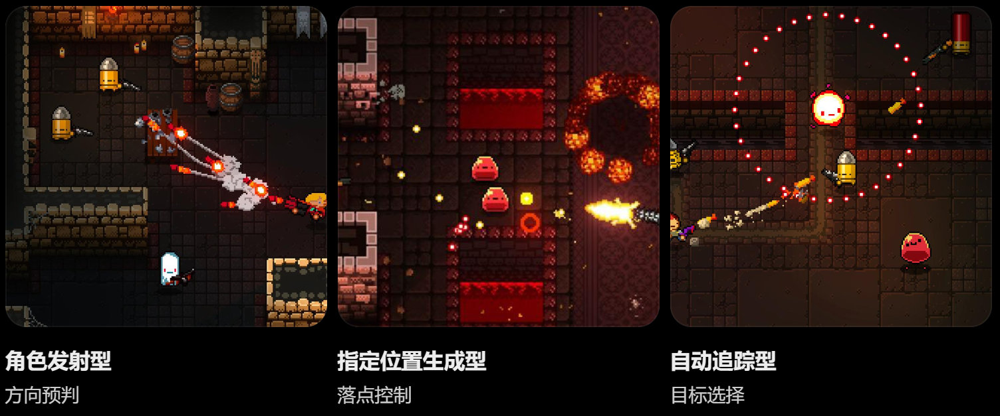
5.1 三种基础施放类型
| 施放类型 | 施放行为 |
|---|---|
| 角色发射型 | 以玩家为发射中心，通常朝鼠标指定方向发射弹幕。 |
| 指定位置生成型 | 在鼠标指定的世界坐标生成弹幕、攻击区域或持续效果。 |
| 自动追踪型 | 自动寻找有效敌人，并根据目标位置追踪或攻击。 |
一张卡牌可以拥有一种或多种施放类型。角色周身环绕、散射、穿透、折返等属于攻击内部的弹幕行为，不新增为独立施放类型。
5.2 冰晶流 18 张攻击牌清单
| 稀有度 | 卡牌名称 | 费用 | 施放类型 | 卡面弹幕特征 |
|---|---|---|---|---|
| 低 | 冰锥术 | 1 | 角色发射型 | 尖锐冰锥沿直线高速飞行。 |
| 低 | 碎晶散射 | 1 | 角色发射型 | 多枚细小冰晶呈扇形散射。 |
| 低 | 追踪雪花 | 0 | 自动追踪型 | 小型雪花冰弹自动追踪敌人。 |
| 低 | 冰晶坠落 | 1 | 指定位置生成型 | 冰晶从空中垂直坠落，砸向指定区域。 |
| 低 | 冰晶爆裂 | 1 | 指定位置生成型 | 冰晶生成后向周围多个方向爆射碎片。 |
| 低 | 旋转冰晶 | 1 | 角色发射型 | 冰晶围绕角色旋转，并向外发射。 |
| 低 | 冰晶穿刺 | 1 | 角色发射型 | 长条冰晶沿直线贯穿敌人。 |
| 低 | 冰晶领域 | 2 | 指定位置生成型 | 指定区域持续涌现尖锐冰锥。 |
| 中 | 冰晶连锁 | 2 | 自动追踪型 | 冰晶命中后折射跳跃，连续追击其他敌人。 |
| 中 | 棱镜折射 | 2 | 角色发射型 | 大型冰晶飞行途中分裂成多枚碎晶。 |
| 中 | 寒霜追猎 | 2 | 自动追踪型 | 多枚冰晶锁定敌人并持续追踪。 |
| 中 | 冰棱风暴 | 2 | 角色发射型 | 环绕角色的冰棱高速旋转，并向外散射。 |
| 中 | 冰晶地刺 | 2 | 指定位置生成型 | 地面沿指定方向连续突起冰刺。 |
| 中 | 冰晶回旋 | 2 | 角色发射型 | 冰晶飞出后改变方向，沿原路折返。 |
| 高 | 极寒晶爆 | 3 | 指定位置生成型 | 大型冰晶核心连续爆发，释放多轮环形碎晶弹幕。 |
| 高 | 永冬追猎 | 3 | 自动追踪型 | 冰晶持续追猎目标，命中后迸发追踪碎片。 |
| 高 | 冰之结晶领域 | 4 | 指定位置生成型 + 自动追踪型 | 领域内不断生成冰刺，并释放自动追踪的冰晶弹幕。 |
| 高 | 凛冬将至 | 4 | 角色发射型 + 指定位置生成型 | 以角色为中心扩散冰晶，同时在多个位置召唤坠落冰锥。 |
以上为当前冰晶流攻击牌的名称、费用、施放类型与卡面简述。具体弹幕实现参数可在开发与测试中调整，不在卡面堆叠大量数量、间隔和碰撞细节。
5.3 弹幕行为设计原则
- 所有攻击使用 2D 俯视角平面逻辑；坠落、地刺等高度变化只作为视觉表现，实际碰撞仍在 2D 平面内计算。
- 卡牌负责触发攻击行为，弹幕负责移动、碰撞、伤害与回收。
- 一张卡牌可以生成多个弹幕；命中后可以触发后续弹幕，但后续弹幕仍归属原卡牌攻击。
- 追踪弹幕需要处理目标死亡、目标失效和没有可用目标的情况。
- 持续领域、环绕攻击和多段攻击需要避免同一帧重复造成不合理的多次伤害。
- 分裂、连锁和命中后生成碎片必须有明确的触发边界，防止无限递归。
- 伤害、速度、范围、持续时间、生成间隔等参数保持可调整，不写死为不可调的固定数值。
5.4 弹幕美术方向
冰晶流弹幕统一采用 2D 像素风格，颜色以白色高光、浅蓝、冰蓝为主体，深蓝用于少量阴影和轮廓；不使用厚重黑色描边，不采用模糊绘画式渐变。弹幕应当在俯视角战场中清楚辨识，特效不能遮挡敌方危险弹幕与玩家位置。
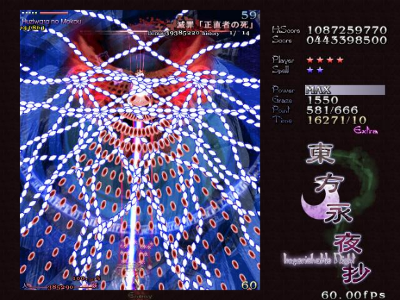
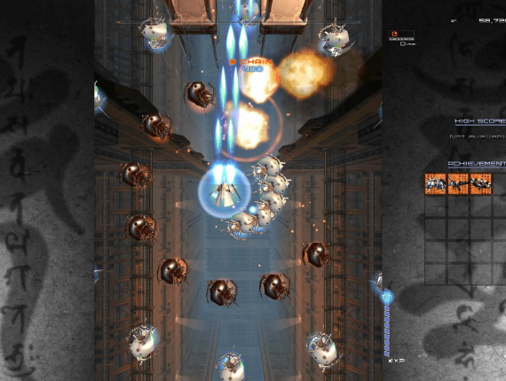
高密度弹幕场景（同类游戏参考：斑鸠 Ikaruga） 清晰弹幕模式（同类游戏参考：斑鸠 Ikaruga）
研究视觉拥挤时危险信息是否仍然清楚 研究弹幕轮廓、颜色与运动轨迹
图 06 弹幕可读性对比
5.5 卡牌实现的通用化方向
卡牌施放系统应当能够承载不同效果。攻击牌施放时生成弹幕；未来能力牌或技能牌可能只提供增益状态、改变战斗状态或触发其他非弹幕效果。因此施放流程不应假设每张卡牌都必然生成弹幕。
六、卡牌合成
本章结论：合成需要让玩家修复卡组短板或放大既有思路，同时保留目标与素材上的取舍。
6.0 卡牌合成设计论证与实现
设计问题：如何在不承诺固定配方的前提下，让合成既提供惊喜，又不变成无法计划的随机抽奖。
体验假设：如果玩家要为一次构筑转变牺牲已有卡牌，并能理解可能的稀有度与类型范围，合成就会成为有风险的阶段性决策。
设计准则：随机性制造候选变化，不抹掉全部计划；选择代价必须清楚；候选池不足不能成为正常流程的死路；素材删除会直接影响卡组，因此不能让结果完全超出玩家预期。
行为目标：玩家会根据当前卡组短板选择素材，并能解释自己愿意承担什么风险，而不是只拿两张最差的牌赌博。
机制拆解：把合成实现为一次可回滚事务：选择两张合法素材→按六种稀有度组合查询概率表→按当前流派与施放类型过滤预制卡池→生成三张候选→玩家确认→随机删除一张素材→新卡入组。取消、候选不足和结果确认分别进入独立界面状态，不把素材删除提前到候选确认前。
关键参数：当前固定三张候选、六种稀有度组合概率和“两张素材中随机删一张”。候选不足三张时的处理仍未确定；在规则定案前，原型应阻断合成并退出，不临时补牌或放宽施放类型限制。
原型验收标准：六种素材组合都能映射到正确概率行，三张候选均满足稀有度和施放类型限制；取消合成不改变卡组，确认后卡组总数保持不变。候选不足时必须显示明确阻断提示并可退出，不能崩溃、自动补入不符合规则的卡或出现负数卡池。
验证指标与迭代方向：观察选材理由、结果后悔频率、候选不足次数和合成后是否形成新打法；若选材理由只剩“处理废牌”，应优先调整随机范围、素材保留规则或候选补足规则。
6.1 合成入口与基本规则
合成发生在战后奖励或明确提供合成机会的节点。玩家可以任意选择两张非传说稀有度卡牌作为素材，不要求两张素材同名，也不要求素材必须同稀有度或同流派。传说稀有度卡牌不能作为合成素材，但可以作为合成结果获得。
6.2 合成结果稀有度概率
| 素材组合 | 低稀有度 | 中稀有度 | 高稀有度 | 传说稀有度 |
|---|---|---|---|---|
| 低 + 低 | 60% | 40% | — | — |
| 中 + 中 | — | 75% | 25% | — |
| 高 + 高 | — | — | 90% | 10% |
| 低 + 中 | 35% | 60% | 5% | — |
| 中 + 高 | — | 70% | 30% | — |
| 低 + 高 | 50% | 25% | 25% | — |
6.3 合成候选生成与选择
- 玩家从卡组中任意选择两张非传说卡牌，确认后开始合成。
- 系统根据两张素材卡牌的稀有度组合，按上表概率判定结果稀有度。
- 结果稀有度确定后，从玩家当前所属流派对应稀有度卡池中随机生成三张候选卡牌。
- 玩家从三张候选卡牌中选择一张，加入卡组。
6.4 施放类型继承过滤
合成结果的施放类型必须属于两张素材卡牌已有施放类型的范围。系统读取两张素材卡牌拥有的全部施放类型，合成候选卡只能使用这些已有类型中的一种或多种。
例如：两张素材合计拥有“角色发射型”“指定位置生成型”和“自动追踪型”，候选只能从使用这些已有类型、且已经审核过的预制卡牌模板中抽取。施放类型范围用于过滤，不在运行时临时拼接未经审核的攻击组合；系统可提供多种类型，但每张候选的弹幕行为仍须能形成可理解的战术用途。
候选卡从当前流派、已判定稀有度的卡池中随机筛选，并同时满足施放类型过滤条件。系统不强制三张候选分别代表素材 A、素材 B 或两者组合。
6.5 素材卡处理与 UI 流程
- 玩家从卡组界面选择两张素材卡，选中卡牌周围显示黄色高亮。
- 界面提供确认与跳过合成机会的操作。
- 确认后单独展示两张素材卡牌；玩家可返回并重新选择，也可确认合成。
- 进入三张合成结果候选界面，玩家选择其中一张并确认。
- 结果展示新获得的卡牌，以及两张素材卡中被保留的那一张。
- 两张素材卡中随机删除一张，另一张返回卡组；新卡加入卡组。
候选卡池在施放类型过滤后若不足三张时的处理方式尚未确定，本版不擅自指定补足或替代规则。
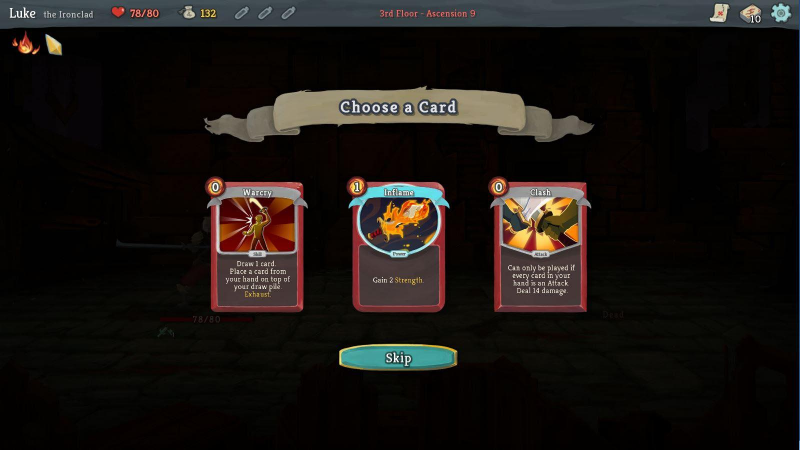
6.6 合成设计边界
- 合成不是固定配方，不要求同名素材，也不根据素材名称强制生成某一张指定卡。
- 合成结果稀有度由概率表决定，不擅自调整概率。
- 传说卡只能作为合成结果获得，不能作为素材。
- 合成后随机删除一张素材卡，另一张素材卡保留。
七、敌方压力与单局结构
本章结论：敌人制造即时压力，路线安排恢复与资源，房间奖励再把战斗结果转化为下一次构筑。
7.1 敌人、战斗压力与终极技能
设计问题：敌人不能只负责提供血量和弹幕，而要在战斗中制造需要不同卡牌与走位回应的情境。
体验假设：如果不同敌人的攻击方式迫使玩家切换距离、目标和施放时机，玩家才会根据战场选择卡牌，而不是固定使用最高伤害组合。
设计准则：危险攻击需要预警；单个敌人应有清楚的行为主题；敌人组合制造压力而非纯粹视觉噪音；受击和死亡结果必须可读。
行为目标：玩家会根据敌人行为改变站位、目标优先级和卡牌施放类型，并能说明某张牌为什么适合当前遭遇。
机制拆解：敌人行为拆成发现目标、追击、预警、攻击和恢复五个可配置阶段；房间层记录小怪房实际出现次数，按弱怪池与强怪池生成敌人。清场后停止 Fuel 衰减并只触发一次奖励；终极技能增加独立的冻结状态，仅暂停敌人与敌方弹幕，并按既定流程恢复。
关键参数：敌人按发现、追击、预警、攻击、恢复五阶段配置；前两个实际小怪房使用弱怪池，之后使用强怪池。预警时长、攻击间隔、敌人数量权重、终极冻结时长和恢复延迟作为战斗节奏参数，在 P0 使用固定初值并记录。
原型验收标准：每类敌人的预警、攻击和受击结果可读，玩家能够仅凭战斗现象判断应改变距离、目标还是施放时机。清场、奖励、终极冻结和恢复之间不出现软锁或重复结算；敌人死亡后追踪弹幕与目标引用能正确失效。
验证指标与迭代方向：观察死亡是否可归因、敌人是否推动卡牌切换以及是否存在跨所有敌人通用的最优牌组；若任何局面都由同一套输出解决，应先补敌人压力差异。
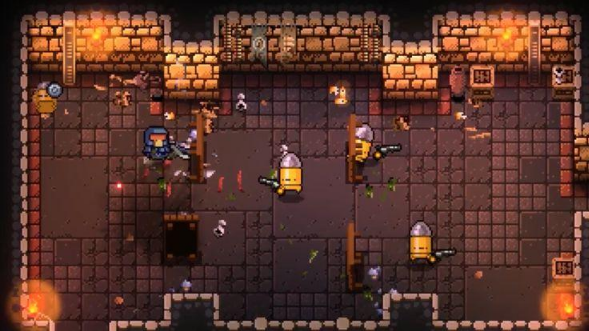
普通敌人
观察基础弹幕、攻击间隔和威胁范围
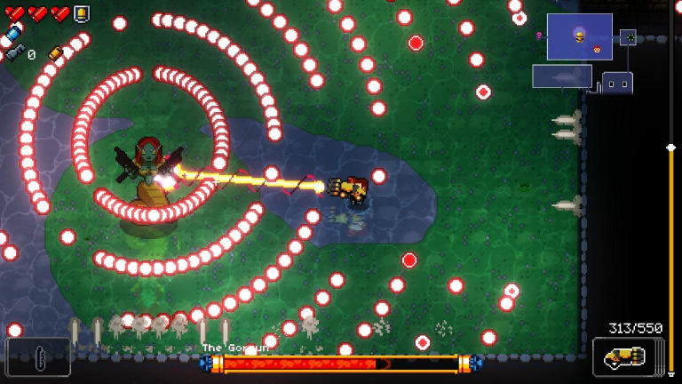
Boss 战
观察密集弹幕、区域控制和走位压力
图 08 敌人压力差异（同类游戏参考：Enter the Gungeon）
7.1.1 普通敌人与遭遇规则
当前 Demo 使用既有小怪池与强怪池。每条路线前两个实际遭遇的小怪战斗房间为弱怪房；这里按小怪房出现次数计算，不按地图层数计算。之后遭遇的小怪房使用强怪池。
| 遭遇阶段 | 敌人池规则 |
|---|---|
| 前两个小怪房 | 弱怪池：DinosaurFrog 与 Fairy_Brown / Fairy_Orange（二选一）。 |
| 之后的小怪房 | 强怪池：在弱怪池基础上增加 Fairy_Green。 |
| 敌人数量 | 按房间难度权重决定敌人数量与组合；具体组合参数以当前敌人配置为准。 |
敌人被玩家弹幕命中后会进入追击状态。敌人血量显示需要与实际生命值保持一致。
7.1.2 战斗房间胜利与切换
普通小怪房间以清除场上敌人为完成条件。完成后停止本房间 Fuel 衰减并进入奖励结算。问号事件战斗场景同样需要完成其强敌战斗目标后才进入奖励流程。
房间完成、事件效果完成或火堆交互完成后，进入地图选择流程。玩家选择下一节点后，进行过渡表现，再在同一森林大地图场景内完成房间对象更新；保留玩家及固定对象，清理上一房间敌人、障碍物和房间对象，并将玩家重置到房间起始位置。
7.1.3 障碍物
- 障碍物 可以被玩家弹幕和敌人弹幕攻击。
- 敌人弹幕对 障碍物 的伤害减半。
- 障碍物 受击时提供白色闪烁反馈。
7.1.4 终极技能：触发与边界
设计问题：如何让传说卡牌的终极演出形成战斗高光，又不变成长时间夺走操作权的过场。
当前规则：传说卡牌作为角色终极技能的触发入口；施放时播放角色终极演出，并通过领域暂时冻结敌人与敌方弹幕。
验证与边界：伤害、持续时间、冷却、领域范围以及不同终极技能是否共享冷却尚未定案。Demo 应先验证玩家是否理解触发条件，以及冻结期间能否重新走位、选择下一张牌或完成施放；若终极只是长时间跳过战斗，应缩短控制时间或保留可操作窗口。
7.2 路线地图与关卡推进
设计问题：如何让路线选择成为一局内的风险与恢复规划，而不是看到哪个节点收益高就选哪个。
体验假设：如果玩家能在进入节点前比较风险、恢复和构筑收益，并能根据当前状态改变路线，地图就会把战斗结果连接到后续决策。
设计准则：节点收益要能提前理解；分歧不能长期存在明显最优路线；固定节点要保证基本节奏；随机节点要提供可管理的变量。
行为目标：玩家会根据生命、资源和卡组状态选择不同节点，并能解释这次选路在规避或承担什么风险。
机制拆解：用图结构生成第 0～10 层路线，记录节点类型、层级、连线和状态。起点提供 2～3 个后继节点；商店、火堆和随机房的生成条件由配置校验。已完成、当前、可选和不可达节点采用不同表现，点击节点后锁定选择并进入房间初始化。
关键参数：地图固定为第 0～10 层，起点提供 2～3 个后继节点；商店仅允许第 3、4、5、7、8 层且每条路线最多一个，第 9 层固定火堆，第 5～7 层最多一个额外火堆。分支数量与连线排布属于原型调参项，生成后必须先通过可达性校验。
原型验收标准：从第 0 层到第 10 层至少存在一条完整连通路径；所有节点可达且连线不重叠，商店与火堆不会出现在禁止层，每条路线的最多商店与额外火堆数量符合规则。玩家无需试错即可识别当前可执行的选路。
验证指标与迭代方向：记录选路理由、路线分布和选择后的资源变化；若玩家总选同一路线或把选择视为随机，说明信息、奖励或节点位置没有形成真实取舍。
7.2.1 地图结构
地图采用分支路线结构，参考《杀戮尖塔》的路线选择可读性。第 0 层为起点，玩家从起点直接选择后续 2～3 个节点之一；路线中存在分支与汇合，最终收束到终点。总层数为第 0 层至第 10 层。
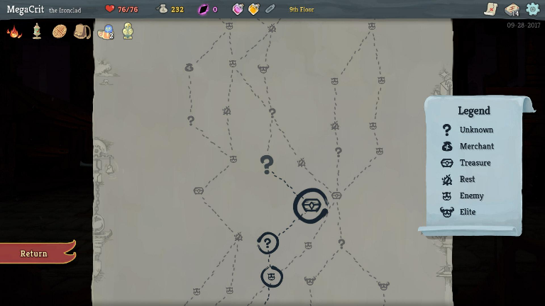
7.2.2 固定层与随机层
| 层数 | 房间规则 |
|---|---|
| 第0层 | 起点。 |
| 第1层 | 固定弱怪房。 |
| 第2～5层 | 常规随机房间：问号事件房 35%，小怪战斗房 65%；商店仅允许出现在第3、4、5层。 |
| 第6层 | 固定宝箱房。 |
| 第7～8层 | 常规随机房间：问号事件房 35%，小怪战斗房 65%；商店仅允许出现在第7、8层。 |
| 第9层 | 固定火堆房。 |
| 第10层 | 最终 Boss 房。 |
7.2.3 商店与额外火堆
- 商店只允许出现在第 3、4、5、7、8 层。
- 每条路线最多出现一个商店，也可以完全没有商店；不为商店强制路线汇合。
- 第 9 层火堆固定存在。
- 从第 5 层开始允许出现额外火堆；第 5～7 层每条路线最多一个额外火堆。
7.2.4 地图节点与房间切换
地图在房间完成后弹出，也可以通过地图快捷键主动打开。选择节点后播放黑屏过渡与右下角角色加载动画，再进入对应房间逻辑。当前方向是在同一森林大地图场景中更新房间对象，而不是每个房间都切换到完全独立的场景。
路线节点数量、排布与连线算法仍可在地图原型中调整；地图应清楚表现已完成节点、当前节点与可选择节点。
7.3 房间类型与奖励结算
设计问题：奖励不能只是战斗后的固定数值发放，而应把本场战斗结果转化为下一场战斗的方案变化。
体验假设：如果不同房间提供不同种类的卡牌、合成和恢复机会，玩家会按卡组短板和当前风险选择奖励，构筑因此形成连续成长。
设计准则：奖励与房间风险对应；奖励信息清楚可比较；结算只触发一次；卡牌选择不能永远由稀有度直接决定。
行为目标：玩家会在新卡与合成之间按卡组需求做选择，并理解不同房间奖励为什么适合当前局面。
机制拆解：为普通怪、问号、宝箱、火堆和商店分别建立奖励结算配置，字段包含触发条件、奖励列表、确认方式和领取标记。问号房先随机事件再展示内容；挑战强敌、宝箱和火堆使用明确的临时替代状态，未完成系统不得显示为已生效。
关键参数：已确认普通小怪房随机掉落 15～23 金币，新卡奖励为三选一，火堆恢复最大生命值 40% 并提供一次合成机会。问号物资数量、恢复数值、商店价格和遗物效果仍待定；界面必须区分“已生效奖励”和“临时占位奖励”。
原型验收标准：每类房间都能进入正确流程、展示可比较奖励并只结算一次；关闭界面、返回地图或再次打开不会重复发放。临时替代、待定数值和未实现内容在界面与文档中标记一致。
验证指标与迭代方向：观察奖励选择理由、获得卡牌后的使用率、奖励触发错误和重复利用漏洞；若玩家总选最高稀有度，说明费用、战术差异或奖励频率不足以形成取舍。
7.3.1 普通小怪房间
玩家进入后按遭遇阶段规则生成弱怪或强怪。清除所有敌人后完成房间。每次普通小怪房间战斗结束，额外随机获得 15～23 金币。普通战斗的构筑奖励仍沿用新卡奖励与合成机会二选一的奖励机制；新卡奖励为三张候选中选择一张。
7.3.2 问号事件房间
问号事件房间进入后，从以下三种场景中随机选择一种执行。不是让玩家同时看到三个场景并进行三选一，而是系统先随机决定本次出现的事件场景。
| 场景 | 事件流程与结果 |
|---|---|
| 场景一：挑战强敌 | 战斗开始前显示“挑战关卡：击败强敌后获得遗物”；按强怪生成规则生成强敌；击败后显示获得一件遗物。当前遗物系统尚未制作，暂以直接回满生命值代替，并提供一次合成卡牌机会。 |
| 场景二：直接获取物资 | 直接获得消耗品和金钱；出现提示确认窗口，玩家确认后结束事件。具体数量与物品池待定。 |
| 场景三：恢复状态 | 恢复生命值并补满燃力；出现提示确认窗口，玩家确认后结束事件。具体生命恢复数值尚未明确。 |
问号事件是常规流派卡池之外的特殊设计入口。通常情况下，奖励卡牌来自当前派系卡池；只有特别的问号事件才可能提供其他流派卡牌。当前 Demo 只有冰晶流，跨流派功能不作为当前实现重点。
7.3.3 宝箱房间
宝箱可交互。交互后提示玩家获得一件遗物和 50 金币。遗物系统尚未制作时，遗物效果暂不展开，不在本版虚构具体遗物内容。
7.3.4 火堆房间
火堆交互完成后，玩家恢复最大生命值的 40%，并获得一次合成卡牌机会。系统显示提示，说明已恢复最大生命值的 40%并提供一次合成机会；玩家点击确认后进入合成流程。火堆固定出现在第 9 层，第 5～7 层可能额外出现一次火堆。
7.3.5 商店房间
商店作为路线节点出现，当前主要承担购买补给与资源交易的功能。商店具体商品池、价格、刷新与购买限制尚未在本次补充中重新确认，沿用原项目已有设计或后续单独确定。
7.3.6 奖励规则汇总
| 房间/事件 | 当前奖励 |
|---|---|
| 普通小怪房 | 随机 15～23 金币；并按战后构筑奖励规则提供新卡与合成机会二选一。 |
| 问号·挑战强敌 | 暂以回满生命代替遗物 + 一次合成机会。 |
| 问号·直接获取物资 | 消耗品 + 金钱；具体数量待定。 |
| 问号·恢复状态 | 恢复生命 + 补满 Fuel；恢复生命具体数值待定。 |
| 宝箱房 | 一件遗物 + 50 金币。 |
| 火堆房 | 恢复最大生命值的 40% + 一次合成机会。 |
八、UI 与战斗信息表现
本章结论：界面必须在最短时间内说明危险、可出牌和失败原因，不能成为第二套操作负担。
8.0 信息设计论证与实现
设计问题：在注意力稀缺的战斗中，界面要帮助玩家快速判断危险、资源和可执行动作，而不是增加另一层阅读工作。
体验假设：当危险区域、手牌可用性和资源状态能在短时间内被识别，紧张感就来自决策；顺畅的界面本身不应成为玩法目标。
设计准则：危险信息优先于装饰信息；界面与特效不能遮挡玩家和敌方弹幕；反馈必须指向原因；动画不能延误实际操作。
行为目标：玩家能快速识别当前危险、可支付的卡牌和施放结果，并能从反馈判断自己为什么成功或失败。
机制拆解：战斗界面按战场危险、角色与敌方弹幕、手牌与资源、临时弹窗四层组织。敌方危险、玩家攻击和卡牌特效使用固定的色彩与轮廓规则；手牌绑定支付状态，明确区分可施放、费用不足、位置非法和拖拽中。受击、施放失败与资源变化都从同一事件源触发反馈。
关键参数：界面固定为战场危险、角色与敌方弹幕、手牌与资源、临时弹窗四层，手牌状态固定区分可施放、费用不足、位置非法和拖拽中。输入响应、提示持续时间与动画遮挡阈值在原型中用实际操作记录校准，避免为了演出延迟施放。
原型验收标准：在不依赖额外口头讲解的情况下，玩家能识别当前危险、可支付卡牌、施放是否合法和失败原因。关键敌方弹幕不被特效遮挡，动画不会延迟输入生效；界面显示与后台资源、手牌和房间状态一致。
验证指标与迭代方向：观察首次战斗的信息识别、误放、遮挡和受击原因描述；若玩家经常不知道为何不能出牌或为何受击，应先修正反馈，而不是增加教程文字。
8.1 手牌与牌堆 UI
- 手牌以弧形方式排列；手牌数量变化时播放整理动画。
- 抽牌堆、弃牌堆和卡组总览均可点击查看卡牌内容，背景为半透明黑色。
- 抽牌堆查看入口位于右下角；弃牌堆查看入口位于左下角；卡组总览显示总卡牌数量。
- 数量关系始终为：卡组总数 = 抽牌堆数量 + 手牌数量 + 弃牌堆数量。
8.2 资源 UI
- Card Power 显示当前值与最大值，不显示小数；能量条每 100 点为一段，共五段。
- 擦弹与击杀产生的 Card Power 以粒子为载体，吸收后才增加数值；普通左键每命中一次直接增加 0.5，不生成粒子。界面不显示小数，需通过命中反馈或整点跳动让玩家感知累积，避免误以为资源未生效。
- Fuel UI 显示当前燃力及阶段变化，阶段升级与满槽第四阶段需要有清晰视觉反馈。
8.3 战斗信息
- 拖拽卡牌时显示施放位置提示，随鼠标移动；施放或取消后隐藏。
- 施放位置是否合法需要即时反馈。
- 敌方弹幕预警、碰撞范围与危险区域必须清楚，不应被冰晶特效遮挡。
- 卡牌说明以简洁卡面为主：名称、稀有度、费用、施放类型和一句弹幕特征；复杂战斗参数不塞入卡面。
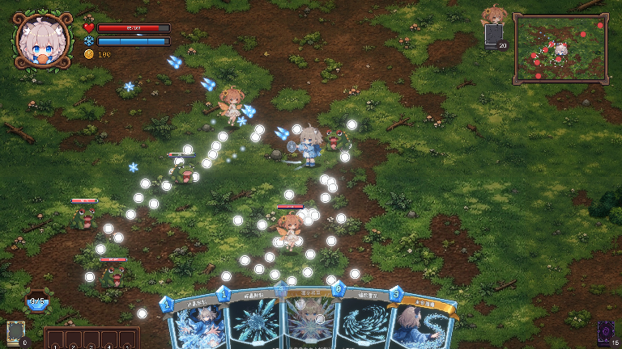
九、Demo 范围与验证
本章结论：Demo 只验证注意力压力能否转化为可学习、可掌控的主动决策；不能支持该命题的内容不进入首轮范围。
9.0 Demo验证设计论证与实现
设计问题：Demo 的目的是验证核心体验，而不是把所有已讨论系统都做成缩略版。
体验假设：如果原型只保留移动、瞄准、拖拽施放、基础敌人、少量卡牌与资源循环，就能更快看出注意力分配是否真的构成乐趣。
设计准则：每个 Demo 模块都要对应一个验证问题；优先解决输入冲突、危险可读性和资源循环；外围内容在核心循环稳定前不进入必要范围。
行为目标：玩家能在短时间战斗中边移动边施放，并表现出能够解释的时机、位置和资源决策。
机制拆解：按 P0、P1 两阶段搭建可玩版本。P0 完成移动、普通攻击、危险规避、拖拽施放、三种施放类型代表牌、Card Power 与一场基础战斗；P1 再接入完整牌组、Fuel 四阶段与跨房间保留、合成、地图、房间奖励和终极技能。测试时启用操作、资源、卡组、房间和奖励事件日志，并准备固定观察表记录失败归因。
关键参数：P0 只保留移动、普通攻击、危险规避、拖拽施放、三种代表牌、Card Power 和一场基础战斗；P1 再扩完整牌组、Fuel、合成、地图、奖励和终极技能。测试记录至少包含测试者编号、操作序列、失败阶段、施放合法性、资源变化与受击原因，用于把调整项落实到具体系统。
原型验收标准：P0 验收以系统闭环和可复现记录为准：测试者无需开发者介入即可完成一轮核心战斗，关键错误能从日志定位，每次迭代都能对应到输入、资源、卡组、战斗或信息呈现中的一个调整项。P0 未通过前不扩张内容量。
验证指标与迭代方向：先记录误放率、施放耗时、受击归因、空手时间、卡牌使用分布和选路理由；若核心循环不成立，应缩小范围并调整机制，而不是增加更多卡牌与房间。
9.1 当前 Demo 范围
| 模块 | 当前范围 |
|---|---|
| 角色与战斗 | 可奇、2D 俯视角移动、缓速移动、普通基础弹幕、敌方弹幕规避。 |
| 卡牌 | 冰晶流攻击牌为重点；当前规划 18 张攻击牌；能力牌和技能牌暂不实现。 |
| 牌堆循环 | 初始 15 张卡组、房间开局 5 张手牌、8 秒补牌、软上限 5、弃牌洗回。 |
| 卡牌合成 | 非传说素材任意两张合成；稀有度概率判定；三选一；施放类型继承过滤；随机删除一张素材。 |
| 资源 | Fuel 四阶段普通攻击成长；Card Power 初始 300、上限 500、100 点折算 1 费。 |
| 关卡 | 第0～10层路线；普通战斗、问号、宝箱、火堆、商店与最终 Boss 节点。 |
| 奖励 | 普通战斗金币、问号事件、宝箱、火堆与构筑奖励。 |
| 终极技能 | 传说卡牌触发角色终极技能演出、领域冻结敌人与敌方弹幕。 |
9.2 原型验证顺序
| 优先级 | 验证内容 | 观察重点 |
|---|---|---|
| P0 | 移动、普通攻击与弹幕规避 | 危险是否易懂、移动是否灵敏、是否存在无法规避的攻击。 |
| P0 | 拖拽施放与合法性反馈 | 拖拽是否顺畅、施放提示是否清楚、误放率是否过高。 |
| P0 | 手牌循环与动画 | 抽牌、弃牌、洗牌、弧形整理动画是否正确且不丢牌。 |
| P0 | Card Power 循环 | 是否经常无牌可用，是否出现无限施放或资源刷取。 |
| P1 | Fuel 积累与跨房间保留 | 阶段切换是否易懂，受击与衰减惩罚是否过重。 |
| P1 | 合成流程与类型继承 | 概率是否正确、候选是否满足素材施放类型限制、素材处理是否正确。 |
| P1 | 路线与房间奖励 | 玩家是否理解不同节点收益，奖励是否按房间类型结算。 |
| P2 | 更多流派、遗物与局外成长 | 核心循环稳定后再扩展。 |
9.3 核心体验验证表
每次验证至少记录目标行为、观察到的现象、失败信号和调整范围。下表中的“成立信号”用于说明判断方向，具体阈值应在首轮测试后确定。
| 验证项 | 目标行为 | 成立信号 | 失败信号 | 调整范围 |
|---|---|---|---|---|
| 施放是走位决策 | 等待危险间隙，在移动中选择出牌时机和位置 | 玩家能解释何时、为何出牌；熟练后施放更稳定 | 受击主要来自输入冲突或视野遮挡 | 先改操作映射与信息表现，再调整难度 |
| 双资源产生不同策略 | 维持普通攻击与 Fuel，并按关键卡牌需求管理 Card Power | 玩家会交替使用两种资源，并根据战况改变获取方式 | 一种资源长期被忽略，或高频攻击形成无限循环 | 调整费用、获取量、衰减与抽牌节奏 |
| 合成产生构筑计划 | 根据卡组短板选择素材，并接受构筑转变的代价 | 玩家能说出选材目的，合成后形成新打法 | 只用来处理废牌、后悔频繁或候选不足 | 先调整随机范围、素材保留与候选补足规则 |
9.4 主要风险
- 操作负担过高：玩家同时处理移动、瞄准、弹幕和资源判断，需控制信息密度与输入优先级。
- 弹幕可读性不足：卡牌特效与敌方弹幕可能互相遮挡。
- 资源循环失衡：高频卡牌命中可能过量产生 Card Power。
- 合成池不足：施放类型过滤后可能不足三张候选，处理方式尚待确定。
- 卡组循环错误：抽牌堆、手牌、弃牌堆数量必须保持一致，洗牌时不能丢失或复制卡牌。
- 房间切换错误：应清理旧房间对象，但保留玩家与固定对象，避免资源或敌人残留。
- 奖励重复或遗漏：房间奖励应按房间类型结算，避免金币、合成机会或恢复重复触发。
附录、消耗品、遗物与局外成长
本章结论：外围系统只有在能够形成新的战斗选择、又不削弱核心验证时，才进入后续范围。
附录设计说明与范围控制
设计问题：消耗品、遗物和局外成长可能扩展策略，也可能稀释实时战斗与构筑判断，需要明确各自承担什么体验。
体验假设：如果消耗品解决战斗中的紧急决策，遗物改变一局内的构筑与路线，局外成长主要扩展可选玩法，三者就能增加变化而不替代核心技巧。
设计准则：每个新增系统都要改变实际选择；局外成长不能让未解锁玩家无法验证核心玩法；当前未实现系统不能伪装成已生效内容。
行为目标：玩家会在关键战斗中使用消耗品，并因遗物改变下一次选路或牌组方向；局外成长提供新组合而非强制数值门槛。
机制拆解：本阶段冻结外围系统范围：遗物和局外成长不进入 P0，宝箱和挑战强敌只保留明确的临时表现；消耗品只有在能够验证“战斗中使用会占用注意力”时，才实现一个代表物品。所有占位内容在界面和文档中标注为未实现，不使用虚构效果填充。
关键参数：遗物、局外成长与多流派在 P0 默认关闭；宝箱和挑战强敌只保留明确占位文案。消耗品仅在确有必要验证注意力成本时做一个代表物品，快捷栏容量、叠加上限、补给和冷却均保持未定，不进入首轮验收。
原型验收标准：Demo 中出现的每个系统都能被识别、使用或明确标记为占位，不把公告、图标或空奖励当成已完成功能。若保留消耗品试用，玩家需能在不暂停战斗的情况下完成选择和使用，且其收益与注意力成本可以被观察。
验证指标与迭代方向：观察消耗品是否被理解和使用、遗物是否改变决策、局外成长是否成为必需；若新增系统没有改变选择，应保留在设计范围外。
A.1 消耗品
消耗品属于战斗中可使用的主动资源，玩家可以在战斗不暂停的情况下使用。快捷栏数量、堆叠规则、补给方式与冷却规则尚待进一步明确。问号事件的直接物资场景会提供消耗品与金钱。
A.2 遗物
遗物是宝箱与挑战强敌事件的重要奖励。当前遗物系统尚未制作，因此挑战强敌事件暂时以回满生命值代替遗物效果；宝箱仍按设计提示获得一件遗物和 50 金币。遗物具体类型、效果、稀有度和叠加规则待定。
A.3 局外成长
游戏存在局外成长与解锁系统的方向，但具体解锁内容、失败后保留进度、永久数值加成边界等尚未确定。本版不新增未经讨论的局外成长规则。
版本记录
本表记录策划案从玩法整理到 Demo 验收稿的主要变更，当前最终版本为 V1.0。
| 版本 | 变更说明 |
|---|---|
| V0.2 | 早期核心玩法与关卡框架整理。 |
| V0.3 | 补充燃力/能量、普通房间节奏与玩法视觉探索内容。 |
| V0.4 | 重组为系统设计文档，补充设计动机、验证方式、参考游戏与头脑风暴章节。 |
| V0.5 | 整合后续讨论与规则补充；更新卡组、手牌、合成、施放类型、双资源、地图关卡、问号事件、宝箱、火堆、金币奖励及终极技能流程。 |
| V0.6 | 调整核心玩法循环与战斗时序，补充卡牌施放、资源获取和房间推进规则。 |
| V0.7 | 补充核心体验命题、设计准则与原型验证内容，统一系统设计表达。 |
| V0.8 | 细化卡牌合成、地图节点、奖励结算与 Demo 范围。 |
| V0.9 | 优化文档结构，补充原型验收标准、实现拆解与主要风险项。 |
| V1.0 | 统一核心命题、设计准则、系统论证、机制参数与验收链路； |
独立验证，也持续收敛范围
这个项目让我把玩法构想、系统规则、功能需求和可运行原型串在同一条链路上。 AI 工具提高了实现速度，但哪些机制值得保留、哪些规则需要调整，仍然要通过实际运行来判断。
- 设计 实时弹幕战斗、卡牌拖拽施放、合成强化、资源管理与 Roguelike 分支路线。
- 验证 围绕战斗操作、卡牌使用、成长机制持续完善原型，用运行结果反向调整设计。
- 资产 使用 AI 工具辅助制作像素角色、地图场景与技能特效，并完成筛选与调整。